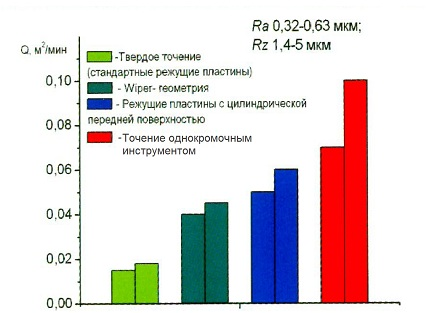

Повышение производительности механической обработки при обеспечении высокого качества получаемой поверхности детали является одной из наиболее важных задач машиностроительного производства. Особую актуальность этого возникает при чистовой обработке закаленных деталей и деталей из материалов с высокой твердостью.
Широкие возможности по обеспечению необходимой шероховатости поверхности при высокой производительности, получаемой за счет увеличения подачи, имеют инструменты с цилиндрической передней поверхностью и однокромочные безвершинные инструменты.
Обычно чистовое точение закаленных сталей инструментом, оснащенным поликристаллическими сверхтвердыми материалами (ПСТМ) на основе кубического нитрида бора производится при подачах не превышающих 0,2 мм/об. Режущие инструменты с «wiper»-геометрией неплохо себя зарекомендовали при двухкратном увеличении подачи. Со значительно большими подачами работают режущие инструменты с цилиндрической передней поверхностью и однокромочные безвершинные инструменты.
Обработка деталей из закаленных сталей инструментом с цилиндрической передней поверхностью проводится с подачами 0,2-0,7 мм/об, что в 2-5 раз выше в сравнении с обработкой традиционным инструментом с плоской передней поверхностью. При этом высота микронеровностей обработанной поверхности составляет Ra 0,20-0,80.
Стойкость инструмента с цилиндрической передней поверхностью при обработке со скоростями резания 60-90 м/мин составляет 30-80 мин в зависимости от величины подачи, что позволяет проводить обработку длинномерных деталей. Обработка проводиться с глубиной резания 0,05-0,3 мм.
Однокромочные инструменты позволяют производить обработку с подачами, существенно превышающими обычно используемые при чистовом точении. Шероховатость поверхностей деталей, обработанных с использованием такого инструмента, при оптимальных режимах резания не превышает Ra 1,25 даже при подачах 0,6-1,0 мм/об.
Стойкость инструмента составляет 40-90 мин, что позволяет выполнять обработку крупногабаритных изделий. Однокромочные инструменты характеризуются низкой скоростью размерного износа, следовательно, этот фактор не оказывает существенного влияния на точность размеров обработанных поверхностей.
Для получения требуемой шероховатости обработанной поверхности необходимо выбрать соотношение подачи и угла наклона режущей кромки инструмента. При этом глубина резания принимается из условия, чтобы длина активной части режущей кромки не превышала максимально допустимую ее величину.
Для обеспечения минимальной высоты микронеровностей по параметру Ra обработка должна производиться со скоростями 0,9—1,5 м/с глубинами резания 0,05-0,15 мм.